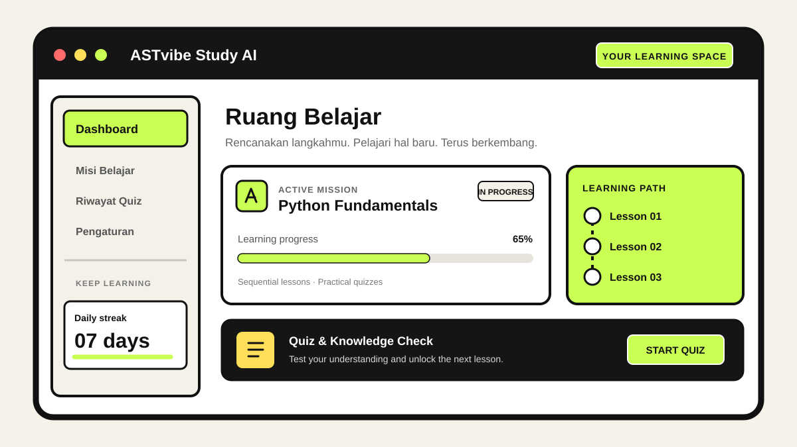

AI-POWERED LEARNING PLATFORM
ASTvibe Study AI
Platform belajar pribadi yang membantu menyusun jalur belajar, mempelajari materi secara bertahap, dan menguji pemahaman melalui Quiz.

Tentang Project
ASTvibe Study AI adalah aplikasi belajar yang menggabungkan alur pembelajaran terstruktur dengan bantuan AI. Pengguna dapat membuat misi belajar, menyusun Learning Path, menghasilkan Lesson ketika siap, lalu menguji pemahaman sebelum melanjutkan ke materi berikutnya. Data misi dan progres disimpan pada akun pengguna.
Fitur Utama
Tech Stack
Yang Saya Pelajari
Project ini menjadi latihan membangun aplikasi full-stack dengan autentikasi pengguna, database, integrasi AI di sisi server, pengelolaan kuota API, alur pembelajaran bertahap, dan deployment.